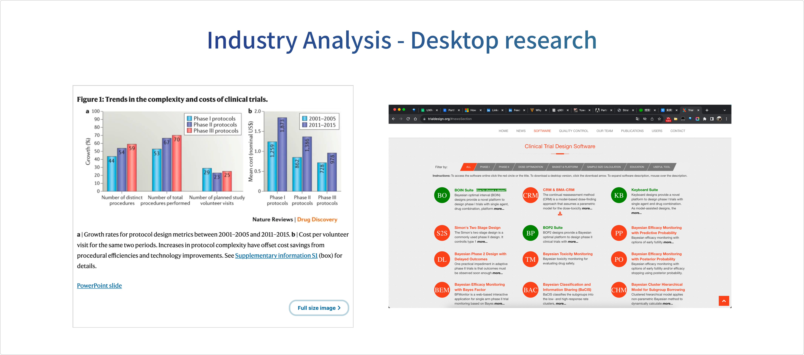
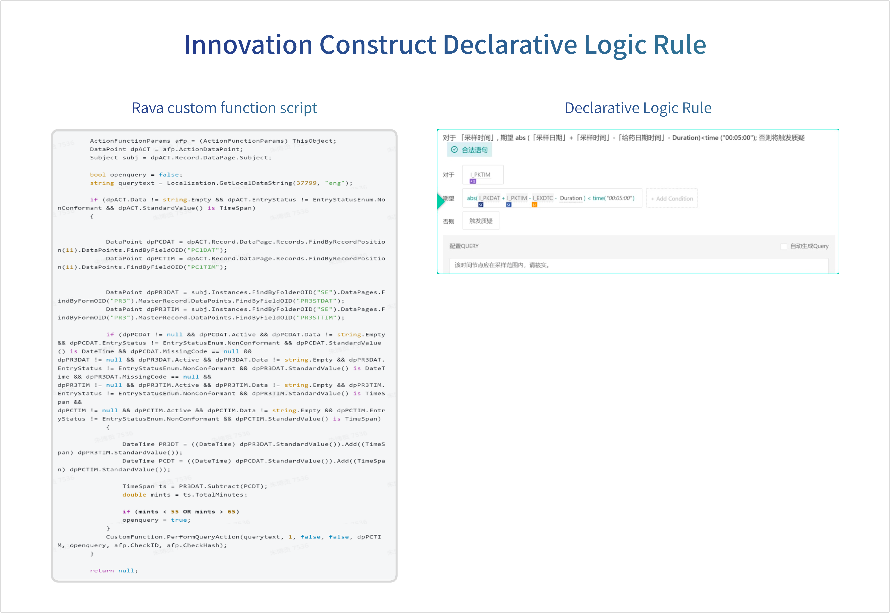

02
Construct 0 to 1 retro
Construct 0 to 1 retro
Opportunity: We aim to provide standardization of processes for professionals in the clinical industry, particularly those who in Data Management (DM) and Database Designer (DBD). By employing multi-dimensional tool selection, we aim to lower the entry barriers for practitioners, starting from the lower end of the market, and address unresolved needs. The primary objective is to significantly reduce the development cycle of clinical trials, creating more value for Clinical Contract Research Organizations (CROs) and pharmaceutical companies while securing profit margins in the clinical industry.
Top-down perspective
Entering this industry, we realize that it is facing increasingly complex trial designs. The industry trend is moving towards simplifying Clinical Study Design through Computer-Aided Design (CAD). This shift is actively transforming the clinical industry towards digitization while complying with regulations. This appears to offer entry points for startup companies new to the industry.
A growing number of pharmaceutical and biotechnology companies and contract research organizations have taken steps to optimize their protocol designs in order to improve feasibility, ease site and subject participation burden, reduce the number of unplanned and unbudgeted protocol amendments, and gather more meaningfuI clinical data. These initiatives include protocol review committees, protocol-authoring practices connecting procedures to primary and key secondary end points, common protocol-authoring templates, and soliciting feedback on draft protocol designs frorm patients and investigative site staff before approval and execution.

2017. Trends in clinical trial design complexity . Natural Reviews & trialdesign.org
Additionally, from a user perspective, we often observe that those involved in the design and implementation of clinical trials frequently use flowcharts to explain the logical sequence and processes of the trials to relevant personnel.
Therefore, the first Proof of Concept (POC) was born: Study Flow Builder. The concept is to link trial design with traditional product matrices and form design by selecting the trial methods, making the trial design clearer and more intuitive. For example, embedding the configuration of classical randomization schemes into the configuration process simplifies these complex experimental configurations, making them more straightforward, standardized, and less reliant on personal experience. This greatly streamlines the trial design process, reducing the threshold for trial design.
POC: Study Flow Builder
Demo: Proof of Concept for the Study Design Project. Showcased at the inaugural product launch event, X-day Break, to convey the value and determination we aim to bring to the industry.

Clinical trial design process

Add Trial Events

Edit Trial Event Name

Add Randomization Factors for the Trial

Edit Clinical Trial Randomization Allocation Rulesl

Design of Visit Matrix
Bottom-up perspective
This vision is very promising. We recognize industry trends, identify unresolved needs, and believe that, in the field of Computer Science, we excel at addressing such issues. While being a technology-driven startup, we currently lack the industry-specific knowledge and experience to quickly identify the best practice solutions for industry pain points. In the early stages of going from 0 to 1, we are re-immersing ourselves to continue finding the Product-Market Fit and establish a solid foundation for the product. Through multiple rounds of pitching with clients, we have adjusted our criteria for opportunities and alignment with clients: focusing on what startups excel at - driving industries with technology, meeting the immediate needs of existing clients, and addressing some of the unresolved needs with innovative solutions.
Therefore, we propose: Identify unmet product needs for the lower-end market, utilize pricing advantages to gain development space, and enhance product performance and services. Subsequently, migrate towards higher-end market customers.

Product-market fit canvas
Dive into Challenges - Micro innovation of Logic Engine
In the clinical industry, EDC suites have become the industry-standard suites. Therefore, we adopt the approach of replicating standardized suites, searching for points of local innovation. The focal point of innovation lies in the local innovation of the logic engine.
In-depth Observation: challenges, pain points and opportunity areas
In the existing process, a challenging aspect was the writing of logic. DBD aimed to ensure that data complied with trial logic by rapidly creating Edit Checks. However, for complex logic such as time window comparisons (checking if the time is within a 5-minute absolute value of the administration time, triggering an EDC query otherwise), Custom Function Scripts needed to be written. This increased the entry barrier for industry professionals and slowed down the trial implementation process.

Compare Custom Function Sript with Logic Engines
Therefore, we aim to allow Database Designers to write such extensively reusable logic through a visual interface, opening up a Low code / No Code interface. We envision using declarative language to replace scripts, enabling practitioners to focus on understanding the business without being bound by code and facilitating trial deployment. Consequently, we have outlined the details of the Edit Check local innovation proof of concept (POC):
Design Proposal
Functionality Design involves constructing logic statements by assembling modular components on the
left side. Different colored blocks are used to differentiate functional modules, achieving an intuitive construction
of logic.

Data Validation Logic Rules

Declarative Addition of Logic Objects

Retrieve Logic Objects

Add Logic Application Objects

Declarative Way to Complete Logic Check Writing
Oberservation: While solving the pain point of making the writing process more intuitive, the drawbacks of the solution became apparent. The drag & drop approach, while making logic statement construction more intuitive, did not improve efficiency. This prompted the initiation of design solution iterations.
Design Proposal Revamp
Keyboard-only user experience, typing by composing. I always strive to deliver intuitive and user-centered solutions to our end users.
Take a glance at the design I created below. It is interactive, catching users' attention all the way all the time by providing timely hint and support for our end users to compose a valid expression. This solution is infused with fascination throughout the journey. Make boring daily work fun! Fostering a sense of accomplishment in their work.

How to compose an Edit Check in Logic Engine

Object Selector Progressively Disclosure Interaction

Logic Composer

Object Recommendation
Here, I drew inspiration from the AIDA model. While the AIDA model is traditionally applied in marketing strategies, its cognitive mechanism often proves effective in various user experience scenarios. It consistently engages users, successfully drawing them into the current scene and strategy. Immersed in this scenario, users achieve a sense of accomplishment and experience joy.

AIDA model
Achievement Highlights
Compare the CRF (Case Report Form) creation process between the Construct product and the Medidata Rave product pages. It can be observed that, despite having a significant market share, the user experience flow for trial design in the established product involves multiple rounds of page navigation. This could be considered a rather poor user experience.
Construct Fast go-live strategy effects - efficiency improveed by 50%.

Construct product and the Medidata Rave product

Construct Fast go-live strategy effects - efficiency improvements by 50%
Longitudinal research: Validation & Measurement
Construct measurement priority roadmap early phase
- Time Span: It involves the collection of data at multiple points in time, spanning weeks, months, years, or even decades.
- Repeated Measurements: Participants are measured or observed on multiple occasions, providing insights into how they change or remain stable over time.
- Tracking Changes: The primary focus is on studying the patterns and trajectories of variables, behaviors, or characteristics over the course of the study.
- Cohort Studies: Participants are often grouped into cohorts based on certain characteristics, and these cohorts are followed over time to observe how they differ or converge.

Construct measurement priority roadmap early phase
In order to ensure that the designed tool aligns with intuition, achieves the goal of enabling users to quickly get started, and significantly improves efficiency, we conducted various validation methods and activities:
1. Remote and In-person interview: Conducting both remote and in-person interviews. Gather initial insights from a diverse user base or a subset of users to understand their needs, pain points, and delve deeper into their experiences, preferences, and motivations when conductiong in-person interviews.
2. Multiple rounds of user validation were conducted, involving various CRO DBDs and Data Managers. Logic Engine tasks were assigned to calculate task completion time and success rates. User feedback was consistently recorded during this process.
3. A two-day workshop, X-Innovator Community Workshop 2022Q1, was organized. Beginning with user training followed by a logic-writing challenge. The challenge simulated real database construction scenarios, providing participants with a Cheatsheet for reference. User feedback was documented throughout the process.
üëâüèª Check it: Event Review | X-Innovator Community
Workshop 2022Q1

X-Innovator Community Workshop 2022 Q1

Customer Engagement & User Oberservation
After multiple rounds of validation and iterations, Logic Composer was successfully launched. It not only aligns with user intuition but also reduces the amount of code needed for logic writing, lowering the entry barrier. Simultaneously, the efficiency of writing individual logics has significantly improved. The Construct product line reached its first milestone with the introduction of self-built database users utilizing the product and tool, contributing to the company's revenue.
03
Logic Engine 2.0 Product Strategy
Logic Engine 2.0 Product Strategy
In just one year, we have confirmed that no-code/low-code serves as the starting point for the logic engine, and this has been validated in terms of customers, projects, and revenue. The upcoming question is: Where should we focus on the experience design to retain existing users?
The product has reached the 2.0 stage: consistently providing a better and faster database-building experience has always been the ultimate experience for Construct. Meanwhile, templates are established to facilitate the rapid transition of the product end-to-end to the EDC data collection stage.

Construct 24 Fiscal Year H1 Planing
Regularly User Interview Validation - 23 Fiscal Year H1 Keyword
AI PILOT CONSTRUCTOR
SOP DOCUMENT AUTO GENERATE
TEMPLATE
DATA STANDARDIZATION
UAT AUTO TEST
THIRD PARTY SYSTEM INTEGRATION

Construct 23 Q1 Validation Sharing abridge

Measurements adjustion
The process of thinking is always accompanied by hands-on experience. It involves continuously experiencing and refining through practical use. Through hands-on experience with 1054 ECs in actual projects, we have further summarized the optimization ideas for the Logic Engine experience that hinder the above goals.

Dogfood
Logic Engine 2.0 Features and Interaction Optimization Proposal
1. From a business perspective: further enhance the initial automation of the EC (electronic commerce). Experiments involve several thousand EC entries. If all can be initialized and verified according to P21 compliance requirements, it will signify a qualitative leap in both data quality and speed, bringing significant value to the product line.
2. From a foundational architecture perspective: maintaining a high degree of encapsulation and templating to provide a unified verification solution for C products that require verification capabilities. Tailored for customers with different proficiency levels, open components for assembling various verification conditions.
"Construct - Compute" should collaboratively implement a set of verification mechanisms and computational logic. Tailored for different customers, it provides varying assembly capabilities, arranged from low to high encapsulation capabilities, from left to right. The objects used are also categorized as DBD (Database Design) and DM/MM (Data Management/Machine Learning), aiming to reduce the maintenance burden on the technology stack. The distinction lies in:
3. From a user experience perspective: Due to the use of the same underlying architecture within the same matrix, different products under the same framework exhibit a closer resemblance in the form of verification data and Look & Feel, ensuring a consistent user experience. This contributes to a sustained enhancement of a unified product feel. Improvements in usability and accessibility for Construct's logic engine operations have a meaningful impact, offering valuable insights for related data line products as well.
- a. "Perceivable" in the context of data structures refers to the quality of being able to be perceived or sensed.
- b. "Operable" in the context of interactive operations means that the system or interface is designed in a way that allows users to easily operate and interact with it.
- c. "Understandable" in the context of functions and expressions refers to the quality of being able to be comprehended or understood by users or programmers.
- d. "Robust" in the context of a system refers to its ability to maintain stability and functionality even in the face of errors or unexpected situations.
- e. Optimizing the interactive performance of certain existing logical expressions and enhancing the user interface for writing expressions by incorporating more intuitive workarounds.
[What if] we were to optimize the logic engine once again, how would we go about it?
. what if an ultimate logic engine should be.png)
Design process by Liedtka and Ogilvie (2011). what if an ultimate logic engine should be?
1. Is it possible to visualize the logic and attempt to initialize EC? This could potentially bring added value:
- a. Enhance logic visualization to clearly display various chained logical relationships. (Primary scenario: logic verification hidden behind dynamic logic)
- b. Prepare initialization for logic related to the time window, further shortening the implementation cycle of clinical data warehouse construction and improving data quality.
- c. Lay the groundwork for fine-grained initialization of test cases. Based on the control of the number of chained reaction logics, the range for generating test cases can be selected, further enhancing quality control for database QA.

Touch designer - a visual development platform

Logic Tree
2. Whether the metaphor of "Pritter" can be used to enhance the readability of encapsulated code？

Prettier

Provide hints for nested structures using parentheses

How does the logic engine optimize the expression of nested structures?
3. Whether increase the illustration of restrictions on data could help to improve readibility?

Hidden path
4. Increase categorization to enhance the accuracy of object selection?

Categorize and provide explanations for functions?